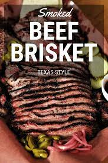

Texas-Style Brisket

Description
The savory yet juicy smoked brisket has been a Texas, smoked meat stable for decades. Using simple but bold seasonings paired with smoking this often large piece of meat at low temperatures for long periods of time make this ;meat almost fall about in your mouth. Stay tuned for my ingredient list and step-by-step recipe to ensure your brisket turns out perfectly.
Ingredient and Material List
- 8-18lb Brisket
- 1 cup Course Kosher Salt
- 1 Cup Course Black Pepper
- 8-10 oz of Apple Juice
- Sprayer Bottle
- Large Brown Butcher Paper
- Temperature Probe
My Step-by-Step Process
- Start by heating your smoker to 225F-250F. I prefer using a mix of Oak and Mesquite. *Note: Using lower temperatures result in longer cook times
- Place your brisket on a large cutting board and start trimming away some of the fat. Ideally, you will have about a quarter inch of fat on all parts of the brisket. It is recommended that you keep the trimming for other uses such as making homemade beef tallow (Recipe found here). The owner of the famous Franklin's BBQ in Austin released a great instructional video on brisket trimming found here
- Once brisket is properly trimmed, its time for seasoning! Mix salt and pepper in empty seasoning shaker. Season generously, covering the entire brisket including potential crevases. If you do not have enough, just remember that I use a 1:1 salt to pepper ratio. *Note: It is VERY important that you use course salt as using table salt will make your brisket too salty
- Place your brisket on the smoker-ensuring the brisket is placed with the fatty side facing up. Spray genrously with your apple juice and then close the lid
- Check occasionally and spray the brisket every hour or so. If the brisket flat (the skinny side of of the brisket) begins to curl(it usually will), wrap your brisket in butcher paper and place back on the pit. If your smoker does not heat evenly, you might need to occasionally rotate the brisket so it does not cook unevenly.
- The beauty of this stage is you can usually relax as it does not require a ton of attention. Take this time in the process to have an ice cold beer or drink of choice
- Pull your brisket off the smoker when it reaches the internal temperature of 200F-205F. Your temperature probe should slide into the meat effortlessly at this temperature
- Lastly, you'll want to let your brisket cool down in something like a rimmed baking sheet. Initially, the brisket will leak it's precious juices but resting will allow the brisket to reabsorb this liquid nectar. After the brisket has cooled for around an hour or two, unwrap and separate the brisket point(fatty, thicker side) from the flat, slice and enjoy!
Return to Top
Return to Main